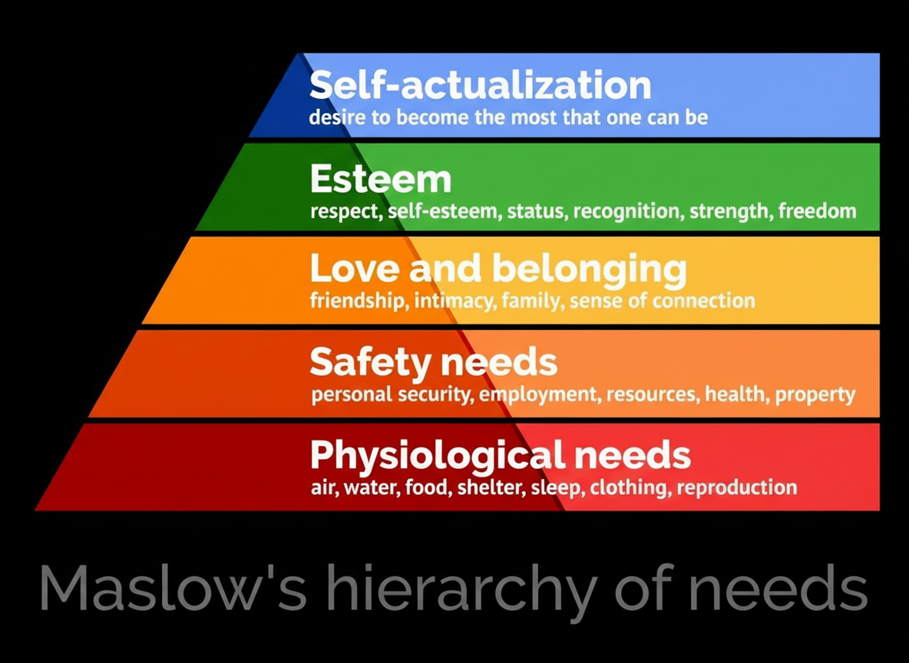

Well-Being evolution during crisis
Over the past two decades, Europe has experienced a series of economic and geopolitical shocks that have profoundly shaped citizens’ well-being. We focus on four crises and visualize how European countries responded through an Aggregate Well-Being Index.
Can major global crises be detected and analyzed using well-being indices?
To what extent does Switzerland's reputation as a 'stability heaven' align with data on economic and social stability, or is it largely a myth?
How do different types of crisis (e.g., economic, health, geopolitical) produce varying effects on well-being?
Crises considered
Introduction to the European context
why this storyAs stressed by the OECD, there cannot exist a single universal definition of well-being. They created a definition based on objective aspects such as income, health, and other measurable values, with the addition of subjective aspects, such as how people evaluate their life, for example through how secure they feel or how lonely they are, and other similar elements. Following this definition, we could not search for a general well-being index, as it is not uniquely defined. Therefore, we had to take some indexes from the OECD website and create our own index, reconstructing Maslow’s pyramid to assign weights to the values we selected. To visualise how European countries have responded to these events, we constructed an Aggregate Well-Being Index combining economic, social and stability dimensions. Scores are weighted based on the association of the indicators with Maslow’s pyramid (basic needs weigh more).

McLeod, S. (2025). Maslow’s hierarchy of needs. Simply Psychology. https://doi.org/10.5281/zenodo.15240897Europe map based on a well-being index
interactive (Flourish)Geographical distribution of well-being
The interactive map shows how the level of well-being has evolved over time in different European countries. The bluer is the country, the higher the well-being index. The index is constructed by assigning a score to the various data provided by the OECD, then weighted by Maslow's needs.
Simply by looking at the map, it is possible to observe a subdivision into zones of well-being. Scandinavia and Central Europe show the highest index over time, while the Balkans and Eastern Europe have a generally lower index but display the greatest improvements in the years analyzed. Western Europe forms a third group, with an index lower than Scandinavia but higher than that of the Balkans and Eastern Europe. It is already visible, by letting time flow in the map, that some regions experience a penalty in well-being in certain years. In the last part of this visualization, three specific points in the timeline will be discussed and explained in detail, but they can already be mentioned as negative shocks in the index in 2009–2010, 2019–2020, and 2021–2022. It is also possible to observe patterns followed by single countries, such as Switzerland, which remains stable throughout the entire timeline, and Greece, which plunged sharply in 2010–2012 and never recovered, keeping the index stable at 0.5. This is linked to the prolonged internal socioeconomic crisis faced by Greece, whose effects are still visible.
Development of single elements of index per country
embedded HTMLRadial chart of every measurment
In the radial chart, it's shown every value found in the dataset of the OECD normalized in a score between 0 and 1, also inverting the scale to keep 1 as the best score and 0 the lowest. So with high unemployment, the score will be low. The color represents the level of the Maslow pyramid assigned to the value, which is represented in the legend in the graph. This graph is explorable as you like, but to give some insight, a few examples will be brought to light.
France's housing cost dropped following the 2008 crisis. In the years following the start of the crisis, the long-unemployment score dropped, followed by housing cost. That means that in France, many people were left without work for a long period of time, and that may influence housing cost directly because it is a value dependent on how much people can spend. Other elements to take into consideration are the fact that rents don't follow the value of the house and they didn't plummet like it did. So with higher bills—for example, water or electricity—the percentage of income used in housing will be higher, diminishing the score of the nation in that category. That pattern can be seen in many other nations in Europe.
Another example is Greece, where the crisis of 2008 was only the entry point in a long period of crisis not yet ended. It can be seen with the plummet of many values like long-term unemployment and earnings, taking with them also all values correlated, starting with difficulty in making ends meet and housing affordability. So in this case, the nation was hit far stronger than the previous example given. Other nations where a stronger impact can be seen are Spain and Ireland, but not as strong as Greece.
For 2020, with COVID-19's stronger wave, we can see that in many countries like Austria and Italy, life expectancy dropped visibly. That's because of the many deaths that happened in that period due to the virus. Also, in some countries like Austria, a slight drop in the unemployment rating is visible—that's because many merchants or many had to close or failed.
In 2022, with the start of the war in Ukraine, there were two principal economic consequences in Europe: the price of gas that grew and the refugees that came. With our data, it's difficult to get those values. In some countries, there is a slight fluctuation in housing cost and difficulty making ends meet due to high gas prices, but nothing really observable in our dataset.
Switzerland Analysis
interactive (Flourish)Dynamic indexes plot
Over the past two decades, Switzerland stands out for the smoothness of its well-being trends, with only mild and temporary deviations during major crisis periods. Despite multiple economic and geopolitical shocks affecting Europe, no structural breaks emerge in the Swiss trajectory. This stability is supported by strong economic fundamentals, including steadily rising incomes and a highly resilient labour market, characterized by high employment and very low long-term unemployment. Social indicators such as safety, social support, life expectancy, and life satisfaction also remain consistently high. Together, these factors allow Switzerland to preserve a high level of aggregate well-being and effectively buffer the impact of repeated crises.
For the average annual gross earnings, a significant drop coincides with the COVID-19 wave in Switzerland.
After the 2008 crisis, there is a spike in the percentage of people having difficulty making ends meet, which after COVID came back down.
There was a drop in employment in 2010, probably as a byproduct of the global economic crisis.
The population feels increasingly safer at night, with no correlation to the analyzed crises.
In household voice, there is stagnation starting in 2016 (possibly due to negative interest rates?).
Housing affordability follows the stagnation discussed earlier.
In life expectancy at birth, there is a drop corresponding to the COVID wave because the virus is dangerous to older people.
Life satisfaction follows a negative trend with two drops—one after COVID and one in 2013—reflecting a sadder population even if all other parameters follow a positive trend.
Long-term unemployment is a super interesting graph for Switzerland because it acts opposite to expectations. That is due to the Kurzarbeit scheme that provides short-time work to pull people back into the workforce; it's strongly used during crises, so long-term unemployment drops because of that policy and spikes when the crisis ends.
Both social support and student reading skills follow a steady course with a single drop and no recovery, probably due to changes in policies or measurement methods.
All drops and spikes cited are in majority really small, giving strong representation of the stability of our country.
Swiss History
In the case of Switzerland, it is important to remember that political stability, direct democracy and high levels of civic education are not the root causes of wealth, but rather the result of an economic process that began much earlier.
An industrial-financial capitalist model had already taken shape between the late 18th and 19th centuries: agricultural reforms made farms more productive, generating savings that ended up in banks and were lent to industry.
Switzerland then exploited colonialism indirectly, exporting yarns, fabrics, machinery and, above all, high-quality niche products weapons, precision instruments and watches to the great European empires.
This model was reinforced in the 20th century. During the Second World War, the country maintained close trade relations with the Axis powers and the National Bank purchased large quantities of German gold, both legitimate and looted, while protecting its neutrality.
It was precisely this neutrality that ensured that Swiss industries were not destroyed by the conflict and were able to take immediate advantage of the demand for materials for European reconstruction.
On this basis, the large banking and financial sector consolidated in the post-war period: a long tradition of private banking, banking secrecy, relatively low taxes and a strong culture of saving attracted capital, multinationals and wealthy individuals.
The result is a combination of competitive industry, powerful finance and stable institutions, which explains why Switzerland is now one of the richest and as a result most stable countries in the world.
Economical power of Switzerland
Thanks to these charts, we can better understand some of the reasons why the data shown earlier have remained so stable over the years, even during periods of crisis.
In the first two charts, we compare two indicators for Switzerland with the European figures: the CPI and GDP per capita. But what do these indicators mean?
The Consumer Price Index (CPI) measures the average change over time in the prices paid by consumers for a market basket of goods and services. It is a key indicator of inflation and reflects the cost of living for households.
Gross Domestic Product (GDP) per capita is the total value of all goods and services produced within a country in a given year, divided by the population. It is a measure of economic output and prosperity.
From the charts, we can see that Switzerland has consistently maintained a lower CPI compared to the European average, indicating a relatively stable cost of living. This stability in prices helps to preserve purchasing power and contributes to overall well-being.
Additionally, Switzerland's GDP per capita is significantly higher than the European average, reflecting a strong and prosperous economy. This economic strength provides a solid foundation for social services, infrastructure, and quality of life, further enhancing the well-being of its citizens.
The third chart shows the unemployment rate in Switzerland compared to the European average. A low unemployment rate is crucial for well-being, as it ensures that more people have access to stable income and employment opportunities. Switzerland's consistently low unemployment rate further contributes to its resilience during economic downturns and crises.
The fourth and final chart is perhaps the most significant of all. Here we can see the CHF/EUR exchange rate over time. This chart is very important because, as explained earlier, Switzerland has gained a position of strong trust from other European countries over the years, and its currency has become a safe-haven currency somewhat like gold because it does not lose value even in times of crisis.
In fact, we can see that during the crisis periods we analyzed, the Swiss franc increases in value relative to the euro. This happens because, during periods of instability, many people sell euros to buy Swiss francs in order to preserve value.
Overall, these economic indicators highlight Switzerland's robust economic position, which plays a significant role in maintaining high levels of well-being even in the face of external shocks and crises.
Well-being changes during periods of crisis
interactive (Flourish maps)Crisis comparison
The Map show the variation of the index in the first visualization during the different depicted crisis. With red being a regression in well-being and blue an augmentation of the index. About the 2008 crisis the difference is computed from 2007 and 2010, it's observable a negative impact in almost every nation with some exeptions: Luxembourg improvement is a byproduct of how the index is created not a real imporovement. Due to missing parameters for 2007 and only a late entry of those values the wheights of the hirarchy levels where disalligned creating this noise in the result. Poland had a close economy and during the global crisis had a opposite trend because the country was in a booming state so the crisis only slowed this state. The other changes in a positive way are really small this due to improvement of factor not strictly correlated to the crisis, for example life expectancy like Bulgaria. As known in general knowledge we can also see a confirmation in our index that Spain,Greece Ireland Italy and Portugal were hitted really hard being in a strong red colour. Also hungary was hitted strongly. Covid 19 had a lighter effect on the index, the difference is calculated between 2019 and 2021, almost all country regressed a little bit but there are no countries with a strong regression like in the previous case. the only courious case is Croatia, life expectancy diminished a lot but due to a general improvment of all others parameters the general well-being increased a lot. The war in Ukraine represents, first and foremost, an economic crisis for the rest of Europe. Our data excludes the belligerents no Russia and no Ukraine. This economic crisis creates opportunities for some countries while posing a real challenge for others. For producers of raw materials also supplied by the belligerents (who can no longer export), it generates a chance to boost production like producers of oil, grain, and iron, which are among the materials diminished due to the war. However, there are also complicated policies around boosting defense (NATO spending) and providing economic support to Ukraine, which may have impacted the richer countries that helped the most. These aren't answers, but mostly points to think about. This is a really complicated geopolitical situation, and since it's not our field of expertise, we can only speculate.
There are notable differences between these crises. The global financial crisis had the most significant impact, with clear patterns visible across economies. The COVID-19 pandemic also produced consistent effects in all countries, while geopolitical crises yield highly diverse outcomes that are closely tied to each nation's specific circumstances.
To proceed with the project, it would be interesting to complete the analysis of the war in Ukraine. This would require finding data covering both Russia and Ukraine, from which it would be possible to create a well-being index comparable to the one developed using our data.
Conclusions
Using the custom well-being index, major global crises are clearly detectable in Europe over the study period, confirming that such shocks leave a measurable imprint on population wellness. Switzerland, however, shows a noticeably more stable trajectory than most European countries, which justifies the “Stability Heaven” title for the period analyzed and reflects its historically resilient labour market and macroeconomic conditions. Each crisis period displays distinct patterns in the well-being index, in line with the different nature of the shocks. For the war in Ukraine, the dataset does not include the main belligerents, so the signal observed for Europe reflects mainly indirect economic effects (energy prices, trade disruptions, inflation) rather than the direct human and social costs of warfare in the conflict zones. The first crisis studied is predominantly economic, starting from the housing and financial sectors and propagating into a broader macroeconomic downturn. The second crisis, the COVID-19 pandemic, combines a direct health shock (mortality, morbidity) with strong economic uncertainty driven by lockdowns and restrictions. The third crisis primarily affects non-belligerent European countries through disruptions to imports and exports and a reconfiguration of global trade ties, rather than through direct military destruction on their territory.